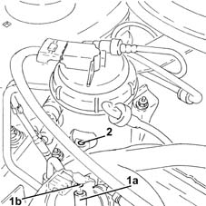

0010T82 DIESEL SYSTEM - Bleed water from diesel filter reservoir
- Path
- Procedures > 00 MAINTENANCE > 0010 NEW UNITS AND PLANNED MAINTENANCE'. > 0010T vehicle oil and fluids > 0010T82 DIESEL SYSTEM - Bleed water from diesel filter reservoir
- Kind
- repair procedure (removal / refitting; the operation number is the code)
- Applies to
- engines: 1.3 JTD; all production periods
- Interactive page
- https://sloeber94.github.io/elrnDB-lYpsln/en/#/2428832
Applies to: all engines; all production periods
Applies to: engines: 1.3 JTD; all production periods
1. With the engine off, fit a pipe (1a) of suitable length on the section of pipe (1b) which emerges from the bottom of the fuel filter, in order to discharge the fluid bled out into a suitble container.
Turn the ignition on without starting the engine.
2. Using a screwdriver, unscrew from above the plug which controls the bleed.

Applies to: engines: 1.3 JTD; all production periods
Re-close the plug without forcing excessively.
Examine the expelled fluid: if there is water and there are no obvious traces of diesel, repeat the bleeding.
If there are traces of diesel, repeating the bleeding operation serves to make sure that there is no more water in the fuel filter.
Turn the ignition key to the OFF position
Remove the pipe used for bleeding.
Dry the filter and make sure that after running the engine for about one minute, there are no leaks from the bottom of the filter.